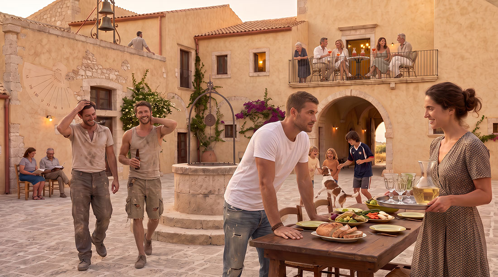
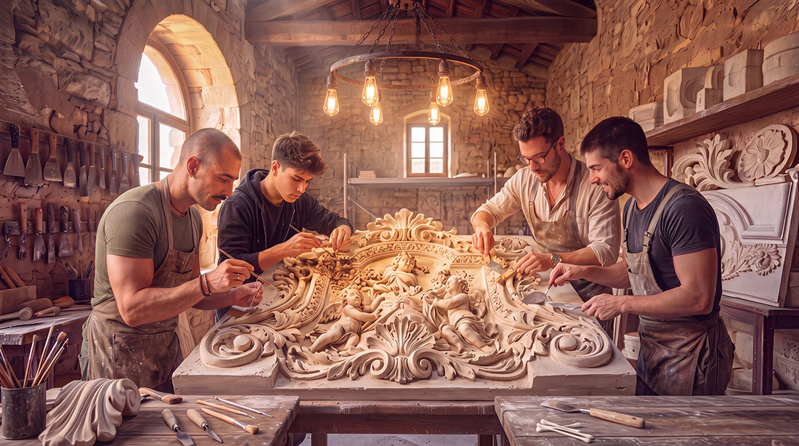
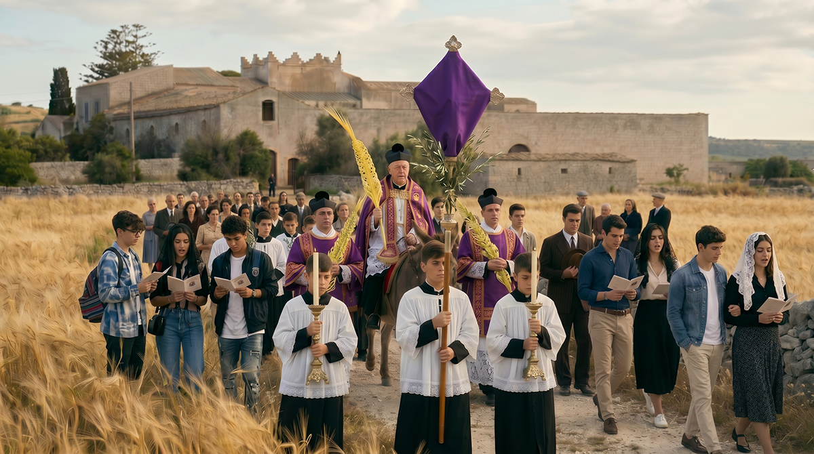
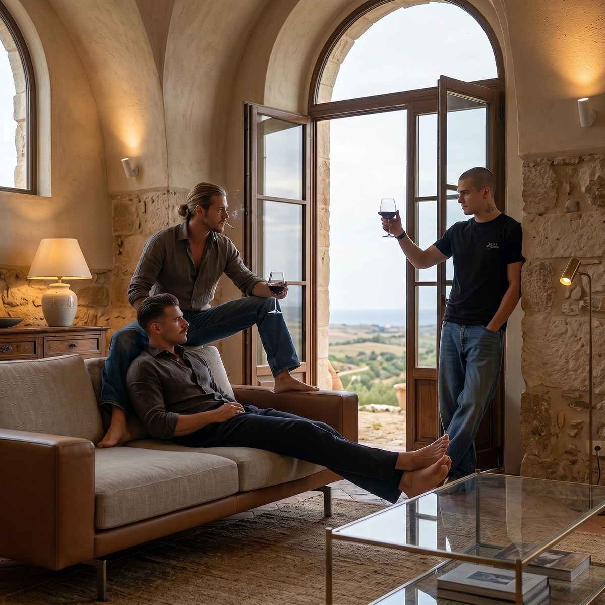

Una masseria fortificata del XVI secolo nel Ragusano: corte chiusa, ali in pietra, cappella, androne e tre edifici rurali sulle terre della proprietà.
Il fronte meridionale, verso il giardino e il portale sud.
Il baglio ibleo è un organismo chiuso verso la campagna e aperto verso di sé. Muri spessi in pietra calcarea, un portale che filtra l’ingresso, una corte su cui affacciano le stanze del lavoro e dell’abitare, una cappella, un androne, i tetti da cui si guarda il territorio: questa è la forma che il XVI secolo ha lasciato nel Ragusano, e che il restauro del Baglio San Michele intende rendere di nuovo abitabile senza stravolgerla.
La tavola pubblicata in questa pagina è il documento da cui si legge lo spazio. Piano terra e primo piano, ali Sud, Ovest e Nord ancora in piedi, porzione dell’ala Est da ricostruire ex novo, cappella, laboratori, androni, giardino a sud e tre edifici rurali fuori del recinto. Le cifre definitive delle unità usciranno dalla Fase 0 di progettazione; la geometria del luogo, invece, è già questa.
TAVOLA DI PROGETTO
Planimetria del Baglio
Piano terra al centro del foglio, primo piano sotto. La bussola punta in basso: il nord è in basso, l’ala Est a sinistra, il giardino e il portale sud in alto. Toccare o fare clic per aprire la tavola a piena risoluzione; su uno schermo stretto si può scorrere orizzontalmente.
La corte occupa il centro. La bussola della tavola punta in basso: sul foglio il sud è in alto, il nord in basso, l’est a sinistra, l’ovest a destra. In alto, l’Ala Sud con l’androne meridionale (portale sui campi) e gli appartamenti 11–15. A destra, l’Ala Ovest con gli appartamenti 4–10. In basso, l’Ala Nord con l’androne settentrionale (portale sul giardino esterno) e gli appartamenti 1–3. A sinistra, l’Ala Est: bottega, laboratori e sala capitolare sull’affaccio della corte; appartamenti 16–21 da ricostruire ex novo. La cappella, con sagrestia, sta all’angolo nord-est.
Fuori del recinto, l’Edificio 1 (135 m², di cui circa 60 esistenti) è la casa prospiciente il portale sud. L’Edificio 2 (85 m²) è un restauro in Fase 2; l’Edificio 3 (175 m²) una ricostruzione in Fase 2.
Primo piano
Il disegno del primo piano è il corpo centrale dell’Ala Nord — la Torre — con anticamera, salotto, biblioteca, camere. A est, i nuovi ambienti da ricostruire ex novo. Terrazza, loggia verandata e scale interne completano il coronamento.
Il percorso verticale androne–scale–terrazza è il camino d’aria del baglio: l’aria entra, sale e esce dai tetti.
Corpo
Posizione
Sulla tavola
Corte
Centro
Affacci delle ali, pozzo sul lato ovest
Ala Sud
Fronte meridionale (in alto sul foglio)
Androne sud · APP. 11–15
Ala Ovest
Fronte occidentale (a destra sul foglio)
APP. 4–10
Ala Nord
Fronte settentrionale (in basso sul foglio)
Androne nord · APP. 1–3
Ala Est
Fronte orientale (a sinistra sul foglio)
Bottega, laboratori, sala capitolare · APP. 16–21 da ricostruire ex novo
Androni
Sud e Nord
Portale sui campi (sud) · portale sul giardino esterno (nord)
Cappella
Angolo nord-est
Con arcata e sagrestia
Laboratori
Ala Est, affaccio sulla corte
Bottega, laboratori, sala capitolare
Edificio 1
Prospiciente il portale sud
135 m² (≈60 m² esistenti)
Edificio 2
Fuori recinto
85 m² · restauro in Fase 2
Edificio 3
Fuori recinto
175 m² · ricostruzione in Fase 2
La Fase 1 interviene sulle ali esistenti: Sud, Ovest, Nord, e sul corpo verso la corte dell’Ala Est (bottega, laboratori, sala capitolare, cappella). Quattordici unità, fra appartamenti per le famiglie e cellette per i giovani single in formazione. La tavola numera gli ambienti; la ripartizione definitiva appartiene al progetto di restauro. La porzione dell’ala Est da ricostruire ex novo (appartamenti 16–21) e i tre edifici rurali appartengono alla Fase 2.
La corte
Al centro del baglio non c’è un vuoto decorativo. C’è un dispositivo climatico e sociale: la corte protegge dal sole e dai venti, raccoglie l’acqua, distribuisce gli accessi, tiene insieme chi abita le ali. La vasca rasoterra, erede della fisqiya mediterranea, e le canalette a pavimento raffreddano per evaporazione; intorno, gli affacci restano in ombra per gran parte del giorno.
La corte, cuore dell’organismo e misura di ogni ala.

La stessa corte a sera, quando la pietra restituisce il calore del giorno.
Le ali
Un baglio completo chiude la corte su quattro lati. Tre ali sono in piedi — Sud, Ovest e Nord. Dell’Ala Est resta il corpo verso la corte (bottega, laboratori, sala capitolare, cappella); gli appartamenti 16–21, sul fronte orientale, sono da ricostruire ex novo. L’Ala Sud guarda il giardino e porta l’androne meridionale, con il portale sui campi. L’Ala Ovest è il fronte occidentale, già numerato sulla tavola (appartamenti 4–10). L’Ala Nord chiude il recinto verso settentrione, con l’androne sul giardino esterno.
Ala Sud
Androne meridionale e appartamenti 11–15. Volte, muri in tufo, accesso dalla corte e, per alcuni ambienti, dal giardino. In alto sul foglio.
Ala Ovest
Appartamenti 4–10 sul fronte occidentale. È l’ala che la tavola mostra a destra, già in piedi, a ovest della corte.
Ala Nord
Androne settentrionale e appartamenti 1–3. In basso sul foglio. Al primo piano è il corpo della Torre.
Ala Est
Bottega, laboratori e sala capitolare restano sull’affaccio della corte. La porzione da ricostruire ex novo è quella degli appartamenti 16–21, nella pietra e nella tipologia del baglio.
Il modellino di studio: l’organismo si comprende intero, non stanza per stanza.
Androni, cappella, laboratori, giardino
Oltre le unità abitative il baglio tiene gli spazi che lo rendono una casa collettiva e non un condominio rurale. Gli androni sono le soglie: a sud il portale sui campi, a nord il portale sul giardino esterno. Chi entra lascia la campagna e arriva in corte. La cappella, all’angolo nord-est, è lo spazio del sacro che ogni baglio ibleo riservava nel recinto. I laboratori, sull’Ala Est verso la corte, tornano a essere officine. Il giardino a sud, oltre il portale, è l’anticamera agricola del recinto, non un parco ornamentale.
Androni
Due soglie: androne dell’Ala Sud (portale sui campi e sul baglio) e androne dell’Ala Nord (portale sul giardino esterno e cancello sul baglio).
Cappella
Angolo nord-est del recinto, con arcata e sagrestia. Lo spazio liturgico resta dentro le mura, come nella tipologia storica del baglio.

Laboratori
Sull’Ala Est, verso la corte: bottega, laboratori e sala capitolare. Qui avranno sede i mestieri dell’Archivum Artium, a poca distanza dalle abitazioni.

Giardino e portale sud
Oltre il portale meridionale si apre il giardino, poi l’Edificio 1. È il lato da cui il baglio guarda le proprie terre.

Acqua, pietra, aria
Il restauro non aggiunge un impianto di climatizzazione visibile. Riprende i dispositivi del baglio ibleo e della tradizione mediterranea: massa termica dei muri, pergole, percorsi d’aria verticali, acqua in corte. L’acqua raffredda, la pietra accumula, l’aria sale. La genealogia di questi gesti è scritta per esteso in Radici storiche; il quadro energetico, in Autonomia energetica.
Salsabil e principi di captazione: l’acqua come raffrescatore, non come ornamento.La pergola taglia il sole d’estate e lascia passare l’aria; in inverno la pietra nuda lavora da sola.
I tre edifici rurali
Sulle terre della masseria, fuori del recinto storico, la tavola colloca tre corpi in pietra iblea. Non sono un villaggio di venti lotti: sono tre edifici, dimensionati sulla tavola. L’Edificio 1, 135 m² di cui circa 60 esistenti, è la casa prospiciente il portale sud. L’Edificio 2, 85 m², è un restauro in Fase 2. L’Edificio 3, 175 m², una ricostruzione in Fase 2. Appartengono alla Fase 2, insieme alla porzione dell’Ala Est da ricostruire. Le famiglie che avranno abitato un appartamento del baglio potranno, se il nucleo cresce, passare a uno di questi corpi secondo il meccanismo di transizione definito dal Capitolo dei Savi.
Edificio 1
135 m²
Casa prospiciente il portale sud. Circa 60 m² esistenti, da ristrutturare; il resto, parte crollata da ricostruire.
Edificio 2
85 m²
Restauro in Fase 2. Il più contenuto dei tre corpi rurali, fuori del recinto storico.
Edificio 3
175 m²
Ricostruzione in Fase 2. Il corpo più ampio, sulle terre della masseria, fuori recinto.
Le terre a sud: gli edifici rurali restano nel paesaggio della masseria, non in un lotto residenziale separato.
Due fasi, un solo organismo
FASE 1
Il baglio storico
Restauro filologico delle ali Sud, Ovest e Nord, della porzione esistente dell’Ala Est, degli androni, della cappella, dei laboratori e della corte. Quattordici unità abitative: appartamenti per le famiglie e cellette per i giovani single in formazione. Climatizzazione naturale, materiali del luogo, niente volumi aggiunti sul recinto esistente.
FASE 2
Porzione dell’Ala Est e edifici rurali
Ricostruzione ex novo della porzione dell’Ala Est (appartamenti 16–21) e realizzazione degli Edifici 1, 2 e 3 in pietra iblea sulle terre della masseria. La corte torna a chiudersi su quattro lati; i tre corpi rurali restano fuori recinto, a misura di famiglia più ampia.
Tempi, costi e ripartizioni interne sono nella pagina Il progetto. La genealogia della tipologia è in Radici storiche. Il rapporto con il Ragusano è in Territorio.
Chi viene a vivere qui non compra una veduta. Entra in un recinto di pietra che ha già una forma, una corte, una cappella e un rapporto con le terre intorno. La tavola serve a questo: a mostrare il luogo prima del discorso sul progetto.